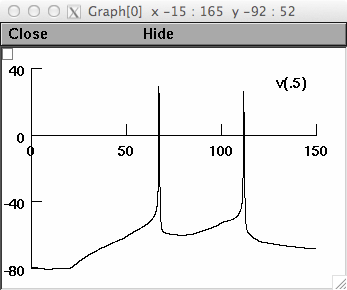

This is the model for the paper: Biddell K, Johnson J (2013) A Biophysical Model of Cortical Glutamate Excitation of Medium Spiny Neurons in the Dorsal Lateral Striatum 56th IEEE Midwest Symposium on Circuits and Systems These NEURON simulator files were supplied by Kevin M Biddell, kevin.biddell at gmail.com Usage: ------ Either auto-launch from ModelDB or download this archive, extract, and compile the mod files (with nrnivmodl on linux/unix, mknrndll on mac os x, mswin). To generate Figures load session fig2.ses or fig3.ses after first loading kmb.msn.5.hoc. The auto-launch will automatically load fig2.ses. When Init & Run is pressed (for fig2.ses) you should see this graph:  Working_NMDA_AMPA_MSN_comparison: Double click on kmb.msn.5 then load session ComplexRun.ses This Folder contains validated and updated NMDA and AMPA receptor models set to KMB's published single compartment medium spiny neuron (scMSN) to be published at IEEE midwest symposium on circuits and systems 2013. This allows cortical stimulation and injection stimulation and KMB.MSN.5 that does not overwrite parameter values. This has a KBNetStim point process that allows for runtime modification of experimental excitiation. This Replaces the newly modiffied NETSTIM that does not allow that. Please use ComplexRun.ses. Update: ------- Version update on 2022-05-17 to support compatibility with upcoming NEURON 9.0